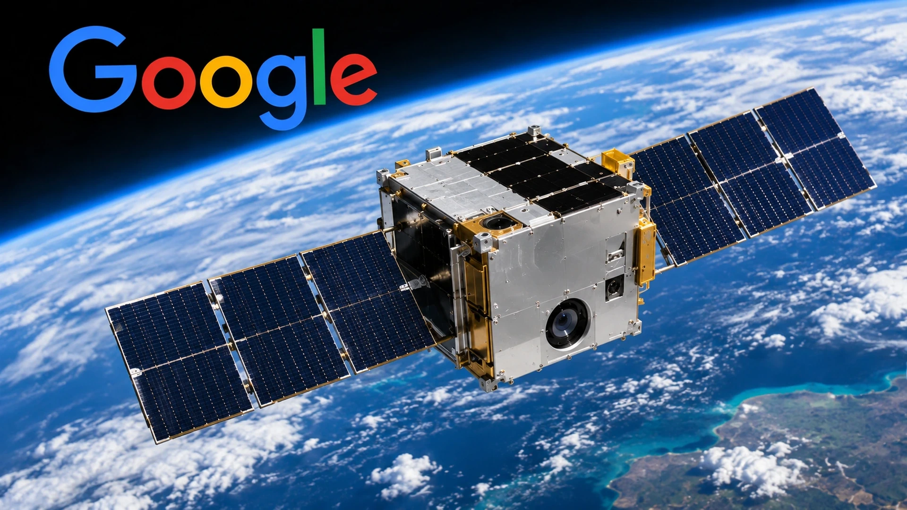

Google’s Suncatcher Prototype Generates an AI Response in Orbit
The prototype returned a Gemma 4 response during an orbital pass. Sustained power, thermal control and communications remain larger hurdles.

Google said its Project Suncatcher spacecraft ran an AI model and generated a response in orbit during an October 30 test. The satellite, developed with Planet, was launched on October 1. The experiment demonstrates an early technical capability, but it is not evidence that a commercially operating space-based data centre is available.
A successful demonstration, not an orbital data center
During a ground-station pass, Google sent a prompt to its onboard Gemma 4 model and received a poem as the satellite passed Svalbard, Norway. That tests an inference workload in orbit; it does not establish the sustained power, cooling and communications required for a commercial data center.
Why compute in space is attractive
Google’s long-term vision involves groups of solar-powered satellites connected through high-speed optical communication links. Spacecraft in favorable low-Earth orbits can experience long periods of sunlight, potentially improving energy availability compared with some ground installations. Electricity demand is becoming a defining constraint for AI expansion, alongside chip supply and the time required to build facilities and grid connections. Our analysis of AI data-center electricity demand examines that bottleneck in the terrestrial market.
Yet the apparent advantage of sunlight is only one component of the calculation. The cost of launch, manufacturing, communications, thermal management and replacing aging processors must be counted. A spacecraft cannot receive a routine hardware upgrade as easily as a server rack in a terrestrial facility. And a satellite performing work on behalf of users on the ground must still receive inputs and transmit results.
Heat and radiation present difficult tests
AI accelerators produce significant heat. Terrestrial data centers rely on air or liquid cooling systems, while spacecraft must ultimately reject heat through radiators. That requirement creates a direct trade-off between computing capacity, mass and the size of thermal equipment. Radiation presents a separate problem: energetic particles can interfere with electronics and shorten their operating lives. The Suncatcher mission is designed to gather evidence about both challenges under genuine orbital conditions.
Google’s next planned step is a test of two interconnected satellites in 2027. Such a mission would examine whether satellites can exchange information fast enough to support distributed AI workloads. Optical communication systems would need precise alignment while spacecraft travel at high speed relative to one another. High bandwidth is essential for tightly coupled accelerators, and today’s ordinary satellite networks are not substitutes for the links found inside major compute clusters.
What this means for the AI industry
Google’s orbital model response demonstrates a technical capability. The commercial test is whether the hardware can operate reliably, share work across spacecraft and deliver results at an acceptable cost. Licensing, debris management and processor life will also affect the feasibility of a larger system.
Correction, November 4: The headline has been narrowed to Google’s Suncatcher demonstration. The announcement does not establish the first AI computation in orbit by any organization. An unsupported detail about the number of operating TPUs has been removed.
Sources and methodology
Primary sources and supporting reporting.